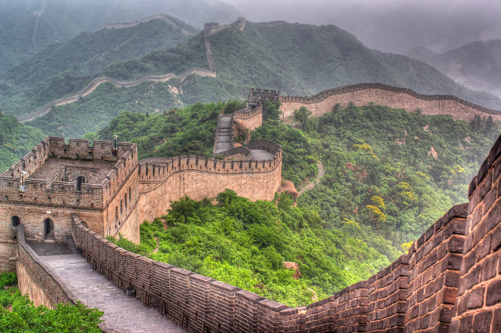

Великая Китайская стена
История
Великая Китайская стена — одно из самых грандиозных сооружений в истории человечества. Ее строительство началось в III веке до н.э. при императоре Цинь Шихуанди для защиты от набегов кочевых племен с севера. Однако большая часть сохранившейся стены была построена во времена династии Мин (1368-1644).
Общая длина всех участков стены составляет около 21 196 км. Стена не является непрерывной — она состоит из множества участков, построенных в разное время.
Архитектура
Высота стены варьируется от 5 до 10 метров, а ширина — от 5 до 8 метров. На всем протяжении стены расположены сторожевые башни, которые использовались для наблюдения и передачи сигналов.
Строительство велось из местных материалов — камня, кирпича, утрамбованной земли и дерева. В некоторых местах в строительный раствор добавляли рисовую муку для увеличения прочности.
Интересные факты
- Великая Китайская стена — единственное рукотворное сооружение, видимое из космоса невооруженным глазом (это миф, на самом деле она не видна).
- При строительстве погибло около миллиона человек, поэтому стену иногда называют "самым длинным кладбищем в мире".
- Самый посещаемый участок стены — Бадалин, расположенный в 70 км от Пекина.
Информация для посетителей
Лучшее время для посещения: апрель-май и сентябрь-октябрь, когда нет сильной жары и толп туристов.
Входная плата: около 45 юаней (7 USD) за посещение участка Бадалин.
Часы работы: с 6:30 до 19:00 (может меняться в зависимости от сезона).